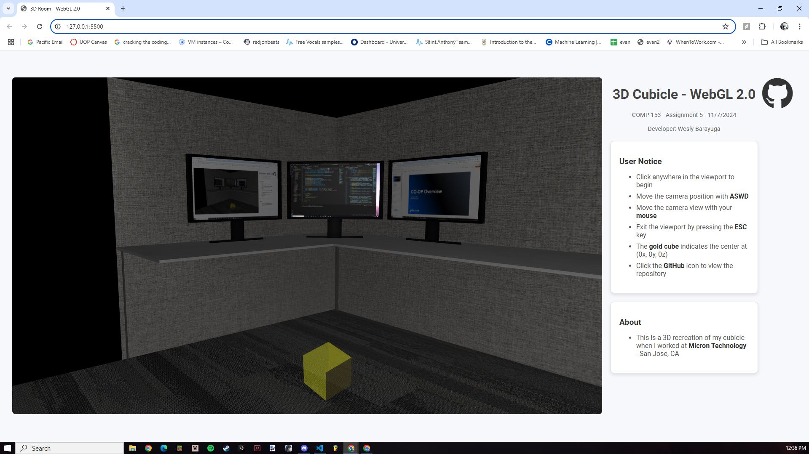
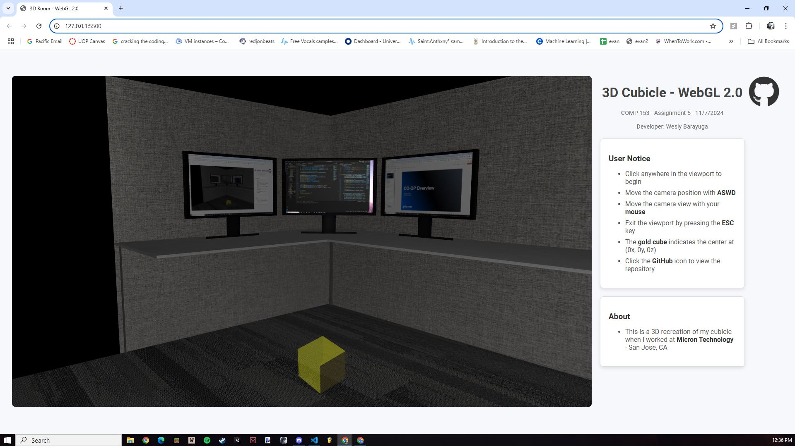

3D Cubicle - WebGL 2.0
COMP 153 - Assignment 5 - 11/7/2024
Developer: Wesly Barayuga
User Notice
- Click anywhere in the viewport to begin
- Move the camera position with ASWD
- Move the camera view with your mouse
- Exit the viewport by pressing the ESC key
- The gold cube indicates the center at (0x, 0y, 0z)
- Click the GitHub icon to view the repository
About
- This is a 3D recreation of my cubicle when I worked at Micron Technology - San Jose, CA
 
